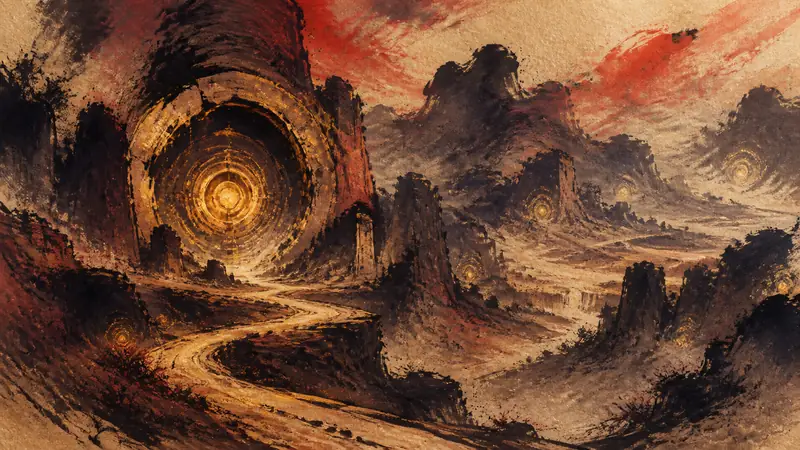

SAKIGARASU | DAWN DISPATCH
All Hellfire disc locations in Far Far West
Player agency: how policy constrains it, how the industry shapes it, how narrative design realizes it.

SAKIGARASU | DAWN DISPATCH
Player agency: how policy constrains it, how the industry shapes it, how narrative design realizes it.
